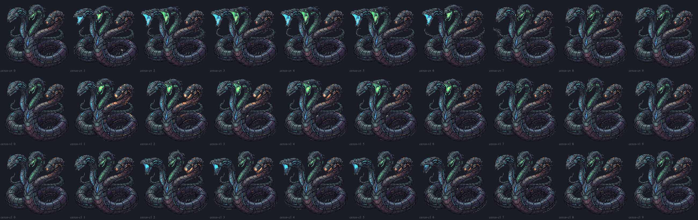
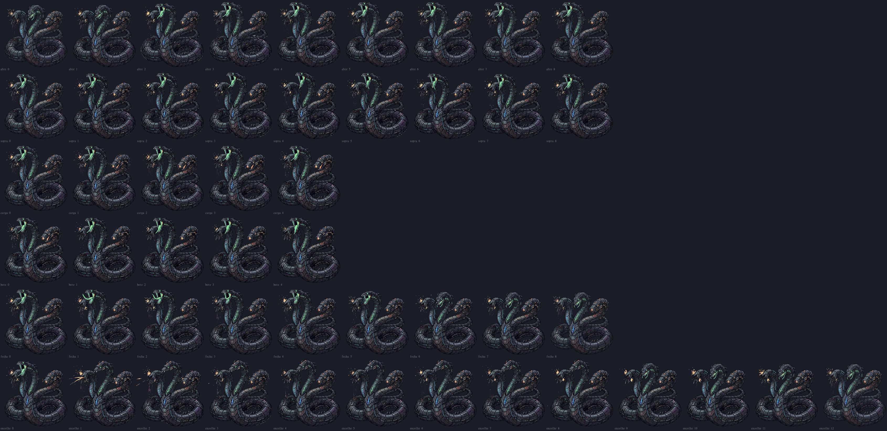

A Serpente: a arte nova das habilidades
02/11/2026 · a primeira pausa da instalação · os gestos que faltavam, gerados no PixelLab · nada foi commitado.
Antes de pôr as habilidades no jogo, faltavam dois grupos de gestos. Os GIFs estão na velocidade do jogo e ampliados 2×.
- O cerco na forma A: três gestos, um para cada dupla que ataca junta. As duas cabeças da dupla avançam e abrem a boca, e a terceira fica parada.
- O gás na forma B, "feridas e furiosas": os seis gestos do gás, diferentes dos da forma A.
Todos começam e terminam no quadro aprovado, sem saltos entre quadros e sem escurecer o corpo (o brilho fica a 92% ou mais do aprovado). Limpei a mancha cinza que o gerador pinta no buraco das roscas e as fagulhas soltas que ele pinta em volta das cabeças. O que sai das bocas (o tiro, o gás, a faísca) vem depois, desenhado pelo jogo.
O cerco (forma A)



O gás na forma B: feridas e furiosas

- a verde se ergue com raiva e abre a boca para baixo;
- sacode a cabeça aos trancos enquanto sopra;
- a laranja gira o focinho como uma torre, mira e treme;
- recua num tranco seco, como um canhão;
- a verde volta a sacudir, e no fim fecha a boca.


O que vale saber
- Na forma B, a boca da verde fica mais alta e mais à frente que hoje (uns 20 px de tela). Ela se ergue por cima do toco, onde há espaço livre. Ergui de propósito: as versões em que a cabeça descia mudavam de onde o gás sai, a lição de 02/11. Por isso as três esquivas da forma B vão ser medidas de novo no jogo, como a spec previa.
- O que não passou (o registro está em
cru/cerco.jsonecru/gasB.json):- a laranja virando uma bocarra de dentes;
- uma cabeça que devia ficar parada abrindo a boca;
- o toco virando uma cabeça;
- uma explosão pintada em cima da serpente inteira, quando o pedido dizia "atira como um canhão";
- babas e jatos pintados saindo das bocas.
Para você decidir
- Os três gestos do cerco ficam assim?
- Os gestos do gás na forma B ficam assim (a verde erguida por cima do toco, a laranja de torre e canhão)?
Com o seu ok, eu sigo para a instalação (as medidas de cada quadro, a camada de pixels, a luta sem a investida).